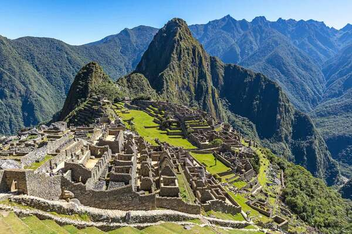
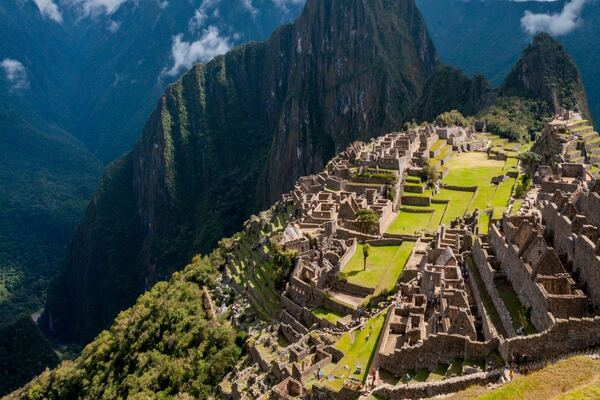

Najlepiej zachowane miasto Inków, w odległości 112 km od Cuzco. Położone jest na wysokości 2090–2400 m n.p.m., na przełęczy między Huayna Picchu a Machu Picchu w peruwiańskich Andach. Poniżej płynie rzeka Urubamba.
Machu Picchu zostało zbudowane około 1450-1460. Budowa przypada na czas panowania dwóch inkaskich władców, Pachacuteca (1438-1471) oraz Túpaca Yupanqui (1472-1493). Archeologowie zgadzają się, że Pachacutec zamówił budowlę jako jego własną królewską posiadłość po udanej wyprawie wojennej. Miasto było używane przez około 80 lat i zostało opuszczone prawdopodobnie ze względu na zniszczenia w innych obszarach Państwa Inków. Istnieje też teoria, że mieszkańcy miasta zmarli na ospę przeniesioną na te tereny przez europejskich podróżników, co miało miejsce jeszcze przed pojawieniem się w pobliżu konkwistadorów.